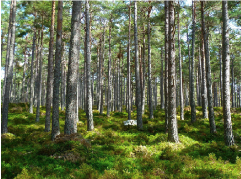
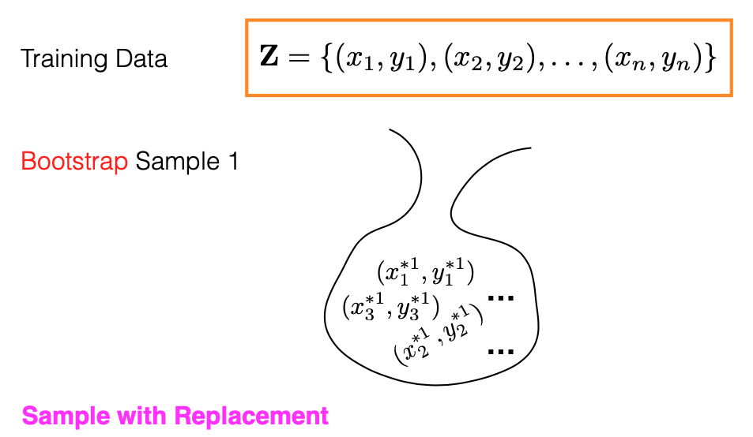
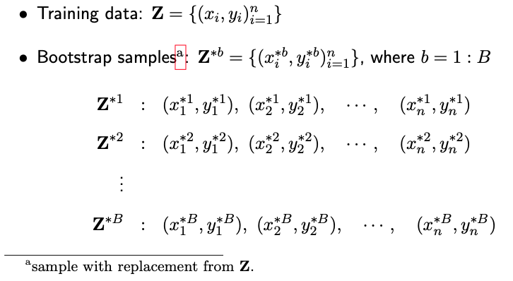
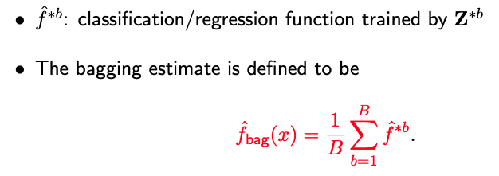
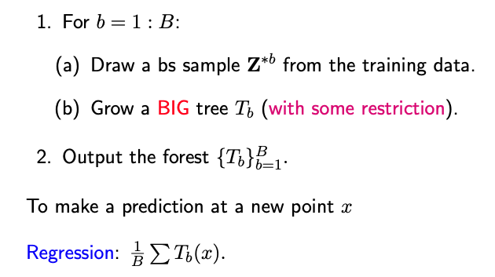

4.2. Random Forest
4.2.1. Introduction to Random Forest
{kind=link}
The performance of an individual regression tree is often not very impressive. To enhance its capabilities, one approach is to assemble multiple trees into a forest. In this week’s discussion, we will focus on ensemble methods like Random Forest, which is built upon the principle of bagging, and Gradient Boosting Machines (GBM), which relies on boosting. These ensemble techniques have proven to be highly effective for various supervised learning problems. For now, we will explore these methods specifically in the context of linear regression. In future discussions, we’ll revisit these techniques for classification tasks.
Understanding Bootstrapping
Before delving into the Random Forest algorithm, it’s essential to understand what a bootstrap sample is. Imagine we have ‘n’ pairs of training data, represented as (xi, yi), stored in an orange box. A bootstrap sample is created by drawing ‘n’ random samples from this box, with replacement. The process involves randomly selecting a data point, say (x2, y2), copying it into the bootstrap sample, returning it to the original orange box, and then drawing another random sample. This process is repeated until ‘n’ samples have been collected. Each bootstrap sample may include repeated and unique data points.
{kind=link}
Out-of-Bag Samples
Note that each bootstrap sample contains ‘n’ data points. Given that some data points can appear multiple times in a single bootstrap sample, it follows that some original data points may not appear at all in that sample. These omitted data points are referred to as “Out-of-Bag” (OOB) samples. Out-of-Bag (OOB) samples play a pivotal role in the Random Forest algorithm, as they effectively function as test points for model evaluation.
What is the meaning of ‘bag’ in this specific context? As shown in the picture above, imagine your original training dataset as being stored in an orange box. A bootstrap sample is then formed by drawing, with replacement, from this box. These selected samples are placed into a metaphorical “bag.”
Bootstrap Aggregation
Bagging (Bootstrap Aggregation) is a technique where we generate multiple bootstrap samples, fit a regression tree model to each, and average the predictions from these trees. Specifically, for each of the ‘B’ bootstrap samples, we fit the data to a regression tree to obtain individual trees T1, T2, …, TB. The final prediction is the average of the predictions from these ‘B’ trees. Bagging is particularly useful for high-variance, low-bias models like decision trees.
Trees are known for their high variance because they are constructed in a top-down greedy manner, making them sensitive to the data they are trained on. Even small changes in the data can result in a very different tree structure. Bagging helps mitigate this high variance by averaging the predictions from multiple trees.
 {kind=link}
{kind=link}
Random Forest
Random Forest improves upon simple bagging by introducing constraints aimed at decorrelating the individual trees. In each iteration, from 1 to ‘B’, we draw a bootstrap sample and grow a large tree, but with specific restrictions.
{kind=link}
Random Forest Constraints: The key constraint in Random Forest is that at each split, only a random subset of ‘m’ features is considered out of the total ‘p’ features. The optimal split is then chosen among these ‘m’ features. The recommended values for ‘m’ are the square root of ‘p’ for classification tasks and ‘p/3’ for regression tasks.
One of the primary reasons for this constraint is to minimize the correlation between individual trees in the forest. If all trees were trained using all features, they would likely make similar splits and, consequently, make highly correlated errors. By subsetting the features at each split, the trees are “forced” to consider different features for making a split. This results in different trees focusing on different aspects of the data, which makes the ensemble more diverse and robust.
By leveraging these advanced techniques, Random Forest achieves a balance between bias and variance, making it a highly effective method for both regression and classification problems.
4.2.2. Random Forest in R/Python
Rcode: [Rcode_W4_Regression_RandomForest]
Python: [Python_W4_Regression_RandomForest]
4.2.3. Variable Importance
Random Forest algorithms, like many ensemble methods, offer robust predictive power but sacrifice interpretability as a trade-off. While individual decision trees are easy to interpret, this advantage diminishes when multiple trees are combined in a forest.
Despite this, Random Forest algorithms provide two key measures to assess the importance of each variable in a random forest model. (For specfic code and commands to retrieve these measures, please check the code page.)
RSS Gain
The first measure evaluates a variable’s importance based on the reduction in the residual sum of squares (RSS) it contributes to each tree. Whenever a split is made in a tree using a particular variable, RSS decreases. Those reductions are are aggregated across all the trees in the forest for each variable. The average RSS improvement gives us an indication of a variable’s importance.
Intuition: A high value for this measure implies that the variable, on average, significantly reduces the residual sum of squares when used in splits.
Accuracy Gain Before/After Permutation
The second measure focuses on prediction accuracy, using OOB samples. The process involves random shuffling of the j-th predictor and recording the new prediction error. The difference between the two prediction errors, before and after permutation, gives the importance measure for the j-th predictor variable. An average is taken across all trees.
Intuition: If shuffling the j-th predictor doesn’t significantly affect the prediction error, it suggests that the variable is not critically important for the model.
Inflated Importance of High-Cardinality Variables: Building on our earlier discussion about the elevated partitioning power of categorical variables with a large number of levels, it’s worth noting that such high-cardinality variables may appear artificially important in a random forest model. This perceived importance arises not necessarily because these variables are genuinely informative, but because they offer more opportunities for splitting. Consequently, their importance metrics could be inflated.